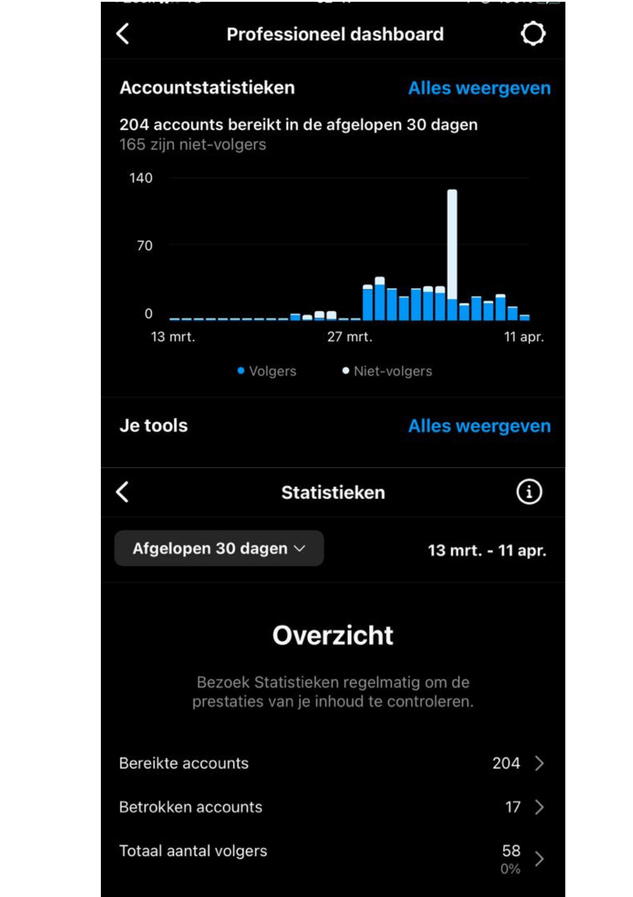

General Information
This branded website is publicly available at https://xpat-online.github.io/Xpat/index.html
This website was created by:
- Femke van Erp (Student ID: 211442)
- Marieke Asbreuk (ID: 211382)
- Laure van Oudenhoven (ID: 211179)
Content
Please clarify here the match between students and pieces of content. Make sure that you provide a link to the correct page within the website
| # | Student ID | Value | Name and link of content |
|---|---|---|---|
| 1. | 211382 | Vision | Our vision |
| 2. | 211382 | Values | Our values |
| 3. | 211179 | Our team | Our Team |
| 4. | 211179 | Contact | Contact |
| 5. | 211442 | Our services | Our services |
| 6. | 211442 | Support us | Support us |
Production
Design Elements
Please provide a list of design elements alongside their justifications:
-
Colour scheme:
- Primary color 1: #EF83CD
- Our first primary color is a bright and lively shade of pink. This colour brings a sense of excitement and enthusiasm, which could help attract people to our Xpat website.
- Primary color 2: #386DBE
- Our second primary color is a calming shade of blue. This color can create a sense of reliability and professionalism, which is important for our service that helps expats connect with other expats.
- Primary color 3: #317DE4
Our third primary color is a brighter shade of blue that adds energy and excitement to our website. It also can draw attention to specific elements on our website, such as the buttons or links.
Our first secondary color is white, which might seem boring but is essential to balance and harmonize the primary colors we used. Because white can create a feeling of simplicity and cleanliness on our website.
Secondary color 2: #000000
Our second secondary color is black. This color can add clarity and elegance. Because it is mainly used for text to make it easy to read.
- Logo:
- styleguide:
- Font choices:
- User interface patterns (e.g. grids, carousels, menu organizations etc.):
- Navigation:
The Our Services page:
provides more detailed information about the service we as xpat offer, with 6 different cards with information on it and a a image of it. Also an explanation about that part of our service: expat community forum, language exchange program, job search assistance, event and activities, legal and immigration support & housing.
The About Us page:
provides information about our team.
The Contact Us page:
includes information about how our users can contact us, as well as the company's social media information.
Overall, We think the navigation and content structure of our website is straightforward and user-friendly, making it easy for our users to find the information that they need.
- How does website design fit the values and personality of the brand?
- Our website design fits well with the values and personality of our brand. Because the website has a clean and modern look that is easy to navigate, which aligns with our brand's focus on simplicity and efficiency. we used simple graphics and icons to make the user experience and this also showcases our message that we want to make it easy for expats to connect with each other.
- How does website design fit the marketing and communication strategy?
- Our website design also supports our marketing and communication strategy. We use a simple and clear language, relevant information. The website's clean design and intuitive navigation also create a positive user experience, which can help build brand loyalty and drive customer referrals.
- How does website design help showcase the unique value proposal of the product?
- Our website design helps showcase the unique value proposition of our brand by making it easy for users to find and connect with other expats. The use of clear calls to action and a simple registration process reinforces the brand's message of simplicity and convenience. The website also emphasizes the social aspect of the service by featuring user testimonials and a blog section, which can help build a sense of community among expats. Overall, the website design effectively communicates the brand's unique value proposition and makes it easy for expats to use the service.

Logo (logo font):
The logo uses two fonts, Playfair Display and Hammersmith One.
Playfair Display looks fancy and timeless,
while Hammersmith One looks bold and modern.
Headlines and paragraphs (website font):
The headlines and paragraphs use the Roboto fon , because it is easy to read on screens and looks professional and clean. We use different font weights and boldness to make important information stand out.
Grid layout:
Our website uses a grid layout to organize the content into different sections, This helps to create a clean and organized visually website, which makes it easier for our users to navigate and find the information that they need.
Carousel:
On the home page of our website we used a carousel to display multiple images and messages in a dynamic and engaging way. This allows our website to showcase different stuff like for example in the carousel you can see the logo and the vision of our service without us overwhelming the user with too much information at once.
navigation menu:
Our website has a navigation menu at the top of the page, this because it makes it easy for our users to access different sections of the website and its clear for them where which content is on which page.
Call-to-action buttons:
Our website uses call-to-action buttons on some pages to encourage users to take a action, such as going to the instagram page of xpat. We made the buttons stand out with a blue color and clear text to draw the user's attention. and also they are easily clickable.
Cards:
The "Our services" page makes use of cards to display information about the different services that we as xpat offer, which makes it easy for the audience to see the services we offer.
Overall, all these user interface patterns were chosen because we wanted to make a user-friendly and engaging experience for the visitors of our website. The grid layout and navigation menu gives our website a clear and organized structure, but also the carousel and call-to-action buttons help us to highlight key features and benefits of XPAT to the audience that visits the website.
Navigation structure:
The navigation structure of our website is just simple and easy to use. Because we make use of a navigation bar at the top of every page, in this we include the following links to pages: Home, our services, About Us, Contact Us. Corporate and support us.
The Home page:
shows a carrousel within this caroussel we added two images one is a large image of our logo and one is a image with our vision and explaining it.. Below the caroussel you see the support us button and beneath that there are three cards that highlight our values: inclusivity, empowerment and diversity.
Credits
Please provide links and/or credits for third-party elements including:
- HTML template: (buas-media-interactive/prj4-group-template)
- UX patterns: Bootstrap,codepen.io, elfsight.com
- Instagram widget: https://elfsight.com/instagram-feed-instashow/?utm_source=websites&utm_medium=clients&utm_content=instagram-feed&utm_term=undefined&utm_campaign=free-widget
- Funding widget: https://codepen.io/soundobj/pen/NqdemB
- Images
- 1. Writing hand: canva.com
- 2. Highfive: canva.com
- 3. People behind laptop: canva.com
- 4. Instagram icon: icons8.com
- 5. Public: canva.com
- 6. letters: canva.com
- 7. Shaking hands: canva.com
- 8. events: canva.com
- 9. signing contract: canva.com
- 10. globe: canva.com
Testing Report
Testing Goals:
The goal of testing our website was to evaluate the user interface and user experience to identify areas of improvement to enhance the website's functionality and increase user engagement.
The specific testing goals are as follows:
To determine if users can navigate the website with ease and accomplish tasks efficiently
To identify any areas of confusion or difficulty during the user testing process
To assess the effectiveness of the website design and its ability to engage users
To gather feedback on the website's overall look and feel, as well as its usability
Testing Methods:
The testing participants will consist of 3 expats (everyone did one expat) between the ages of 25 to 40 who are part of the target audience for the Xpat website. The test will be conducted remotely, and the participants will be asked to access the website on their personal computers.
The test protocol will include a set of tasks for the participants to complete, which will include navigating the website, making a donation, and exploring the content. Participants will be asked to think out loud and provide feedback as they interact with the website. The test session will be recorded for later analysis.
Testing Results:
Positive aspects of the UI/UX:
The website has a visually appealing design, with a modern look and feel
The website is easy to navigate, with clear labels and intuitive menus
The website provides users with a clear understanding of the brand's vision, mission, and values
The website offers users option to donate/fund an support xpat
The website features engaging graphics and icons that enhance the user experience
Negative aspects of the UI/UX:
The content order needs improvement, with the donation button being more prominently displayed
The "About Us" button in the navigation bar is too generic and should be renamed
The website lacks interactive elements and could benefit from more hovers and carousels to increase user engagement Some tasks require too many inputs from the user, which slows down the process and creates confusion
The website could benefit from a better navigation flow to improve efficiency
Improvements Implemented:
Based on the testing results, we would make several improvements
These include:
Rearranging the order of content to display the service and donation button more prominently
Renaming the "About Us" button to "Our Team" in the navigation bar
Adding more interactive elements to increase user engagement, such as hovers and carousels
Simplifying the user input process to enhance efficiency and reduce confusion Improving the navigation flow to make the website more user-friendly..
Marketing
Context of campaign and promotional activities
Xpat is a brand that wants to make the lives of expats easier and more fulfilling by providing a platform where they can connect with other expats who are going through the similar experiences. Our mission is to create a sense of community among expats, allowing them to build friendships, share knowledge, and support one another throughout their journey abroad. To achieve our goals, we have taken a strategic approach to our promotional activities, with a strong focus on engagement and community building. We created an Instagram page that is filled with content for our audience (expats), including fun facts, quotes from users, tips of the week, event posters, did you know, and reels. By offering a variety of content, we aim to attract expats from all ages. We posted almost every day 2 times a day and 1 story a day. Our promotional activities were designed to increase our follower count and encourage people to join Xpat, our website. By using Instagram as a promotional tool, we were able to reach a wide audience of expats who are active on the platform. Through our content, we showcased the benefits of joining Xpat and the value that our platform can provide for expats. Our Communication & Media Plan is focused on building a strong community for expats who are engaged and active on our platform. By providing valuable content and encouraging participation, we were able to build a loyal following of expats who were invested in our brand and committed to helping others within the community. Overall, our promotional activities were an essential part, and we were committed to continuing to engage with our audience and build a strong community of expats who feel supported and connected through our platform xpat.
Planning:

Learning Points
Through the project while we executed the Communication & Media Plan, we gained valuable insights and learning points that we can use for future marketing stuff. We expected that using Instagram as a promotional tool would be effective in reaching our target audience of expats, and this expectation was confirmed through the engagement we received on our posts. However, we did not expect to gain as many followers as we had hoped for within the timeframe of our objectives. Despite this, we learned that consistent posting of a variety of content types, including interactive content and Reels, can lead to increased engagement and a wider reach. We also learned that it is important to listen to our audience and tailor our content to their interests and needs. One of our main takeaways from our experience executing the Communication & Media Plan was the importance of community building. By creating a space where expats can connect with one another and share their experiences, we were able to build a loyal following of engaged users who felt supported and valued. We also learned the importance of measuring and analyzing our metrics to understand what is working and what can be improved upon in our marketing efforts. Overall, our experience with executing the Communication & Media Plan for Xpat has taught us valuable lessons about effective marketing strategies for reaching and engaging with our target audience. We are excited to continue building our community of expats and applying what we have learned to future marketing efforts.
Another learning point was the importance of consistent branding and messaging. The Xpat Online Instagram account has maintained a consistent visual identity through the use of a specific color scheme and branded graphics. The captions also consistently convey the message of the brand's mission to help expats in their new countries. This consistency has helped to establish a strong brand identity and create a sense of trust and familiarity with the audience.;
If we were to do this project again, We would use additional platforms, such as Facebook or Twitter, to reach a wider audience. Additionally, We would recommend exploring different types of promotional activities that can help to increase long-term engagement and conversions. Finally, We would suggest measuring the effectiveness of the promotional activities and adjusting the strategy accordingly to achieve the desired results. 
Future Planning
Based on our past experience executing the Communication & Media Plan for Xpat, we would like to make some changes to our future planning in order to achieve our objectives more effectively. Firstly, we would like to reassess our target audience and create a more detailed persona that takes into account the specific needs and interests of expats.
With this new persona in mind, we would create new objectives for the upcoming period that are more specific and measurable. For example, we might aim to increase our follower count by a certain percentage within a set timeframe, or to increase the number of user-generated content submissions by a certain amount.
We would also create a content calendar that is tailored to the interests and needs of our target audience, with a focus on interactive content that encourages engagement and conversation. In addition, we would increase our use of Reels and other video content, as we have found that this is an effective way to reach a wider audience.
To track our progress and measure the success of our marketing efforts, we would continue to monitor our metrics and analyze the data to understand what is working and what can be improved upon. We would also consider running targeted ads on Instagram to reach a larger audience and drive more traffic to the Xpat website.
Overall, by taking into account what we have learned from our past experience executing the Communication & Media Plan for Xpat, we believe that we can create a more effective and engaging marketing strategy for the future.
Professionalism
All our instagram posts and stories: (you can slide and click on the right to see all the posts)
Click on this button to go to our Instagram page:
Instagram
Management
Lean Canvas v2.
Fill in at least 2 bullet points per building block and according to the rubrics.
Problem
- Problem: 1. Loneliness 2. No reach of information of your new country 3. Almost impossible to make new contacts
- Loneliness: Dating apps, Tinder No reach of information: Information giving by the government. Almost impossible to make new contacts: Going to public places and talk to people.
Existing alternatives:
Solution
- A website designed for expats where they can create an account and where they fill in their interest, their hobbies, and a little story about themselves.
We provide events where expats can sign up to and get to know each other during an activity. As a member you can see who has signed up and see their profiles with their information. In this way it makes it more personal.
Every event has one expact coordinater, this is a expat who coordinates that event and from who you can see the phone number and reach out to. In this way it is less scary to participate in a event.
To become a member you have to verifiy yourself. In this way we make sure that it is safe. The meeting points for the events are at public places so it is safer. Member can not see each other personal information unless a member choose to have that public.
Unique value proposition
- Creating a safe community of expats that can meet up, help each other, and create a close group of friends without feeling obligated to find a romantic connection as you would on a dating app, that is where XPAT is for.
Service
- With XPAT we bring expats together through our website. Expats have a personal account on the website that they can use to sign up to typical Dutch events. During the events expats meet other expats and they create a community while they are living away from home.
Unfair advantage
- Connecting expats through typical Dutch events.
Customer segments:
- List your target customers and/or users.
- Target group: Expats in the age range of 30-45 years old Coming to the Netherlands for work Working in technology and Ict Looking for a way to connect with people and make new friends.
Early adopters:
- Expats that are working in the Netherlands and want to make new contacts. They have tried dating apps, but they don’t want the romantic part. They are looking for a way to use an online tool to make friends and connect with people in real life. The expats are free in the weekend and want to fill their weekend with activities together with other people. Expats who get money from their company to spend on activities in their new country, and looking to spend this money.
Key metrics
- Website:
- Number of viewers on our public website
- Number of viewers on our members part of the website
- Number of new members who have signed up.
- Number of which event members click on
- Number of members who are actually signing up to an event.
Instagram:
- Likes
- Comments
- Views
- Engagement
- Advertising results - Viewers on the Instagram pages
Channels
- Instagram:
We use Instagram as a marketing tool in which we show potential new members content of our product. But we also use it to stay engaged with our existing members.
Website:
On our website we have two parts. One part is for the visitors who are interested in becoming a member of XPAT. On the other part of the website members can log in to get their part of the website with their own profile and the activities etc. In this way we can use the website as a marketing tool for new potential members but also as our product for existing members. Word of mouth
Cost structure
- Fixed:
Salaries
Taxes
Variable:
Advertising costs on Instagram
Website hosting Calculation:
50 members signed up for an event, it is two hours work of organizing. 50 (members) x 2.50 (service costs) = 125, - euro. Event manager earns 3000, - per month, works 40 hours week, hour wage of 50, - euro 2 x 50 = 100, - euro After organizing an event we have 25 euro left per event.
Revenue streams
- Fee from subscriptions of the members.
Subscription fee: 50 euro’s
Service costs of when members are sign up for a events.
Service costs per event per member: 2.50 euro
Advertising fee from advertising on our website.
Cost structure
- List your main costs: define the fixed and variable costs.
- Calculate the cost per unit.
Services/products
- State what your product and/or service is and how this contributes to your unique value proposition.
- Clarify the fit between the product/service developed and the brand identity/brand image.
Validation of Assumptions
Write a reflection on the choices made in creating choosing the trademark, including an analysis of the existing alternatives.
Appendix
Please use the list below to provide links to evidence for all parts of your justication. Please double-check all links before delivering the website. Do not hesitate to refer to these numbers above.